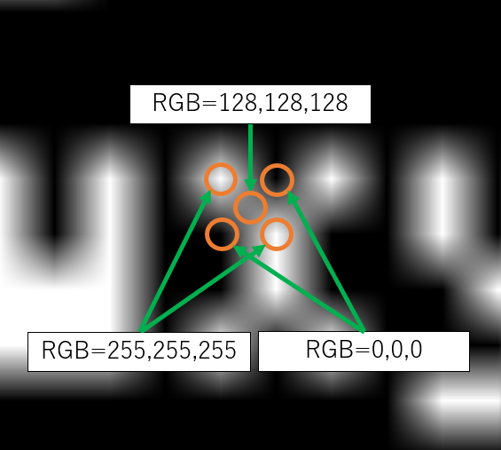
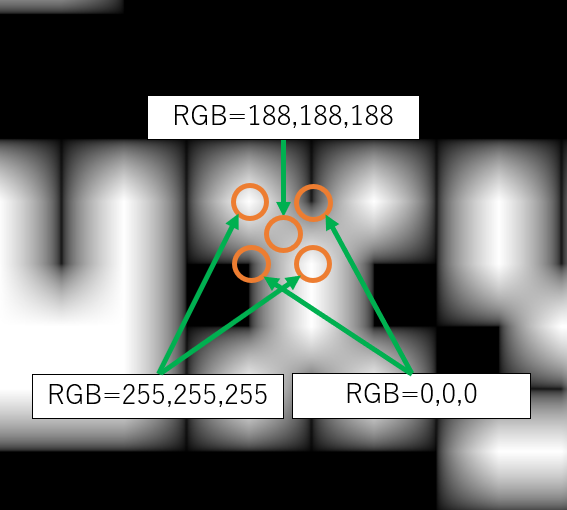

レトロゲームのドット絵の拡大表示と EOTF/OETF の関係
この文書では、 レトロゲームを最新の PC やコンソールに移植するような場合に必要となる、 低解像度のドット絵をドット感を残しつつ高解像度ディスプレイに拡大表示する処理についてまとめます。 そして、拡大処理で見落としがちな問題とその解決方法、および改良と高速化について触れます。この文書では、ごく基本的なバイリニアフィルタによる拡大処理のみを取り扱います。 高解像度化技術周辺や、CRT のスキャンラインや画素の再現は、この文書で取り扱う範囲外なので一切触れません。 また、 話を簡単にするため、拡大結果を sRGB 規格のディスプレイに表示するケースのみを考えます。
筆者はディスプレイの規格が専門分野ではないので、 色の定義などの理解が甘い箇所があるかもしれません。あらかじめご了承ください。 何か間違いがありましたら、ご指摘いただければ幸いです。
ドット絵の滲みを再現したい
- 当時のドット絵は滲んで表示されていた
-
レトロゲームが実機動作していた当時のディスプレイは解像度が低く、
ドットは滲んで表示されていました。
当時のドット絵はこれを前提に描かれているため、
当時のゲーム画面を現在の高解像度ディスプレイに表示する際、
ドットの滲みを再現しないと元のドット絵の雰囲気は出せません。
- バイリニアフィルタで拡大表示することで滲みを再現してみる
-
ドット絵の滲みを再現するにはどうしたら良いでしょうか？
単純に考えると、
隣接するピクセル同士で色をブレンドしつつ拡大表示すれば良いように思えます。
とりあえず取っ掛かりとして、バイリニアフィルタで単純に拡大することにしてみます。 バイリニアフィルタは、テクスチャ上のサンプリング位置の周囲 2x2 ピクセルを取得し、 その 4 ピクセルを重みづけして合成しサンプリング結果とする方法です。 隣接するピクセル同士がブレンドされることになるので、滲みを表現することが可能です。

バイリニアフィルタが読み取った 2x2 ピクセルを拡大表示した図。
図中のオレンジの破線はサンプリング位置を示している。
A B C D の 4 つのピクセルを読み取り、
A:B:C:D = 赤:緑:黄:青 の面積比で重みづけし、
線形補間した結果を出力する。
- 入力画像と、バイリニアフィルタで拡大した結果
-
バイリニアフィルタで拡大した画像を sRGB 規格のディスプレイ上で表示した結果を示します。


入力画像


バイリニアフィルタで拡大表示した結果
バイリニアフィルタを適用することで、 ドットが滲んだ拡大結果を得ることはできました。 しかし、なんとも形容しがたいイマイチ感があります。 何が問題なのでしょうか・・・？
バイリニアフィルタで単純拡大した画像のイマイチ感
- イマイチなところ
-
- フォントが細くなっている
- 黒の線が太くなっている
- よく見ると全体的に暗くなっている
- 色も少し変わっているようだ
- 等々・・・
- 何がまずいのだろうか？
-
次のような思考がよぎります。
- バイリニアフィルタがまずいのか？
- バイキュービック補間にすればいいのか？
- CRT の画素の再現やスキャンライン感が必要なのか？
- 結果がイマイチということは、そもそもドットの滲みを再現する必要なんてなかったのでは？
- 問題をしっかり分析する必要がある
-
別なアプローチを考えたり宗旨替えを検討するまえに、
バイリニアフィルタで単純拡大した絵の何がまずかったのか、
しっかりと分析する必要があります。
結論を先に書くと、 イマイチな絵が得られたのは EOTF/OETF（後述）を考慮していないことが原因 です。
この文書ではこのあと、 EOTF/OETF を考慮しながらバイリニアフィルタを改良していきます。 バイキュービック補間への拡張や、 CRT の画素の再現やスキャンライン感の再現を試みる等々の場合でも、 EOTF/OETF の考慮を避けて通ることはできません。
EOTF および OETF とは
ピクセルの値と実際にディスプレイから出力される光の強さの関係を把握する必要があります。- EOTF
-
電気信号の強さ（ここではピクセル値）と画面から出力される光の強さの関係を定義する関数を、
EOTF（Electro-Optical Transfer Function の略）と呼びます。
EOTF は、単純な比例の式とは限りません。
- レトロゲーム世代のディスプレイガンマ
-
レトロゲーム世代のドット絵は、
1980～90年代当時の家庭用テレビやパソコン用ディスプレイ上で正しく見えるように調整されています。
当時のドット絵を正しく取り扱うには、
当時のディスプレイの発色を理解する必要があります。
当時のディスプレイは CRT ディスプレイです。 CRT は EOTF のような厳密な定義を持ちませんが、 その仕組み上、電気信号の強さと出力される光の強さの関係は、 一般に次のようになります。
この文書では、 レトロゲーム世代のディスプレイの EOTF として ガンマ 2.2 の曲線を利用していきます。L: 画面から出力される光の強さ V: 電気信号の強さ（ここではピクセル値） ガンマ値: 2.2 L = V ^ ガンマ値
- sRGB 規格のディスプレイ
-
一方、現世代のディスプレイでは、発色に関する厳密な定義が存在します。
1990 年代末に策定された規格である sRGB では、
その当時の市場のディスプレイに合わせて EOTF が定義されました。
sRGB の EOTF は、疑似コードで示すと次のようになります。
分岐を伴って少し複雑に見えますが、 この疑似コードがやろうとしていることは、 sRGB よりも先行した規格である BT.709 をベースとして、 当時のディスプレイが広く採用していたガンマ 2.2 の曲線（CRT ディスプレイに由来）にフィットさせることです。 sRGB ではガンマに相当する指数部が 2.4 になっていますが、 この疑似コードの出力をグラフ上にプロットすると、 ガンマ 2.2 の曲線にほぼ一致する結果となります。L: 画面から出力される光の強さ V: 電気信号の強さ（ここではピクセル値） if V <= 0.04045: L = V / 12.92 else: L = ((V + 0.055) / 1.055) ^ 2.4
- sRGB の EOTF とガンマ 2.2 のグラフを比較
-
ここで、sRGB の EOTF がガンマ 2.2 の曲線にどの程度近いかを確認しておきます。

ピッタリとまでは行きませんが、ほぼ一致しているように見えます。 sRGB の EOTF は輝度が低い部分の諧調がリニアになるなど細かい差がありますが、 そのような違いが問題とならないケースでは、 sRGB の EOTF をガンマ 2.2 の曲線で近似する方法はうまく機能することがわかります。 従って、 レトロゲーム世代のドット絵は、 sRGB 規格のディスプレイ上であれば、 元のピクセル値でそのまま（ビット数など精度は変換を行うものとして）表示するだけで、 概ね同じ絵が表示されます。
- OETF
-
EOTF の逆変換は OETF（Optical-Electro Transfer Function の略）と呼ばれます。
sRGB の OETF を疑似コードで示すと以下のようになります。
L: 画面から出力される光の強さ V: 電気信号の強さ（ここではピクセル値） if L <= 0.0031308: V = 12.92 * L else: V = 1.055 * (L ^ (1.0 / 2.4)) - 0.055
バイリニアフィルタする際に EOTF/OETF を考慮する必要がある
バイリニアフィルタを適用するとき、 EOTF/OETF を考慮するかどうかで結果が大きく異なります。- 白と黒のピクセル値を平均しても中間の明るさのグレーにはならない
-
例えば、sRGB 規格のディスプレイ上で
「RGB=255,255,255 の白」と「RGB=0,0,0 の黒」の中間の明るさを持つグレーはどのようなピクセル値になるでしょうか？
単純に 255 を 2 で割り、128 とするのは間違いです。 実験してみましょう。 「RGB=255,255,255 の白」と「RGB=0,0,0 の黒」をチェッカー模様状に配置した画像を作ります。 これを dot by dot で表示した状態で、ディスプレイから遠く離れて肉眼で観察すると、 白と黒が混ざって中間の明るさのグレーを視認することが可能です。 これと、RGB=128,128,128 のグレー画像を、sRGB 規格のディスプレイ上で表示し、見比べます。

左：RGB=255,255,255 と RGB=0,0,0 のチェッカー模様
右：RGB=128,128,128 で均一にフィルした画像
（注）デスクトップの拡大率を 100% に設定して見比べてください
明らかに、RGB=128,128,128 のグレー（右）の方が暗く表示されていることがわかります。 つまり 128 は 255 と 0 の中間の明るさではないことがわかります。
- 中間の明るさのグレーを作るには OETF を考慮する必要がある
-
sRGB ディスプレイ上で、白と黒の中間（=0.5）の輝度を出力するピクセル値を求めるには、
EOTF の逆変換である OETF を考慮します。
これを考慮すると、出力値 0.5 が得られる時の入力値は 0.735... になります。
これに 255 を掛けると 24 ビットカラーのピクセル値となります。結果はおよそ 188 です。
先ほどの白と黒のチェッカー模様と、RGB=188,188,188 のグレーと並べると、次のようになります。 sRGB 規格のディスプレイ上に表示して見比べると、 両者はほぼ一致することが確認できます。

左：RGB=255,255,255 と RGB=0,0,0 のチェッカー模様
右：RGB=188,188,188 で均一にフィルした画像
（注）デスクトップの拡大率を 100% に設定して見比べてください
- 同様の問題はバイリニアフィルタでも発生している
-
例えばテクスチャ上に、「RGB=255,255,255 の白」と「RGB=0,0,0 の黒」のピクセルが隣り合って配置されているとして、
その中間の位置からバイリニアフィルタで読み取るとどうなるでしょうか？
これまでの説明に従うと、得られるピクセル値は（端数は四捨五入するとして）RGB=128,128,128 となります。
先ほど実験したとおり、
これは sRGB 規格のディスプレイ上では、白と黒の中間の明るさのグレーにはなりません。
- EOTF/OETF を考慮してバイリニアフィルタを実行する必要がある
-
この問題を回避するには、
EOTF を考慮して入力ピクセルを実際のディスプレイ上の明るさに変換したうえでバイリニアフィルタを適用し、
さらに得られたバイリニアフィルタ結果を OETF を考慮して出力画像に書き込む必要があります。
ピクセル値に対して直接バイリニアフィルタを適用することは、
リニア（単純な比例の式）でないものを
リニアであるとみなして補間することになるので間違いです。
イマイチ感の原因を考える
以上を踏まえて、 冒頭で示したバイリニアフィルタによる拡大画像が どうしてイマイチだったのかを再度考えていきます。- 入力画像 と イマイチ感のある出力画像（再掲）
-
入力画像
バイリニアフィルタで拡大表示した結果（イマイチ感あり）
- 白と黒のドットの境界線あたりを拡大してみる
-
白と黒のドットの境界線あたりのピクセル値を見てみます。
次の図は、フォントのスクリーンショットの x のあたりを拡大したものです。

2つの白ピクセル（RGB=255,255,255）と、2つの黒ピクセル（RGB=0,0,0）に囲まれた部分があります。 この部分のピクセル値は、RGB=128,128,128 になっていました。
先ほどの、チェッカー模様を使った実験から、 sRGB 規格のディスプレイ上では、RGB=128,128,128 は白と黒の中間の明るさではないことがわかっています。 従って、この絵は拡大結果としては正しくありません。
- EOTF/OETF を考慮していないことがイマイチ感の原因
-
この画像の生成過程では、
入力画像のピクセル値を直接バイニリアフィルタリングし、
得られた結果も同様に直接出力画像に書き込んでいます。
計算過程で、EOTF/OETF を考慮した変換処理は一切行っていません。
ここまでの実験で示したとおり、
EOTF/OETF を考慮せずバイニリアフィルタすると、輝度が正しくなくなります。
白い線が細くなったり、黒い線が太くなったりしていたのは、すべてこれが原因です。
また、EOTF/OETF を考慮しない場合正しい値からどの程度ズレるかは、入力値によって異なります。 そして、発生するズレの程度は R G B の成分ごとでも異なります。 従って、EOTF/OETF を考慮せずバイニリアフィルタすると、色味も正しくなくなります。
EOTF/OETF を考慮したバイリニアフィルタ
一連の問題は、EOTF/OETF を考慮したバイリニアフィルタを行うことで解決されます。- 疑似コード
-
EOTF/OETF を考慮したバイリニアフィルタを、
HLSL ベースの疑似コードで示すと次のようになります。
この文書の最後で触れますが、 GPU を利用する場合、 この疑似コードに含まれる処理の多くはテクスチャサンプラのレベルに組み込まれているため、 シェーダコードとして実装する必要はありません。 ここでは説明上、自力で行う実装としています。/* float2 texCoord = テクスチャ座標 float2 reso = テクスチャの解像度 inputTexture = テクスチャ コードを単純化するため、いずれの EOTF もガンマ2.2の曲線としている。 */ /* ピクセル単位のテクスチャ座標 */ float2 pos = texCoord * reso; /* ピクセル中心の補正 */ pos -= 0.5; /* バイリニア補間する４ピクセル */ int2 ipos = int2(pos); float4 pixel00 = inputTexture[ipos ]; float4 pixel01 = inputTexture[ipos + int2(1,0)]; float4 pixel10 = inputTexture[ipos + int2(0,1)]; float4 pixel11 = inputTexture[ipos + int2(1,1)]; /* ガンマ2.2 → リニアに変換 */ pixel00.rgb = pow(pixel00.rgb, 2.2); pixel01.rgb = pow(pixel01.rgb, 2.2); pixel10.rgb = pow(pixel10.rgb, 2.2); pixel11.rgb = pow(pixel11.rgb, 2.2); /* バイリニアフィルタの補間率 */ float2 alpha = frac(pos); /* 自力バイリニアフィルタ */ float4 result = pixel00 * (1 - alpha.x) * (1 - alpha.y) + pixel01 * alpha.x * (1 - alpha.y) + pixel10 * (1 - alpha.x) * alpha.y + pixel11 * alpha.x * alpha.y; /* リニア → ガンマ2.2に変換 */ result.rgb = pow(result.rgb, 1.0/2.2);
- EOTF/OETF 考慮の効果
-
先ほどの画像を使い、
EOTF/OETF 考慮による効果を確認します。
入力画像


EOTF/OETF を考慮してバイリニアフィルタした結果
フォントのスクリーンショットの x のあたりを拡大してみます。

2つの白ピクセル（RGB=255,255,255）と、2つの黒ピクセル（RGB=0,0,0）に囲まれた位置のピクセル値は、RGB=188,188,188 になっていました。 これは sRGB の EOTF を適用すると、白と黒の中間の明るさになります。
画面が全体的に暗くなっていた問題は EOTF/OETF 考慮により解消し、 バイリニアフィルタによりボケたピクセルも得られました。 ただし、これをレトロゲーム機のドット絵の滲みの表現とするには、過剰にボケ気味です。 このあと対処していきます。
改良：ドット感を残しつつぼけさせる
EOTF/OETF を考慮したバイリニアフィルタが正しい輝度を出力することはわかりましたが、 ボケ気味の絵が出るのが気になるところでした。 改良を試みます。- ドット感を残しつつぼけさせるバイリニアフィルタ
-
単純に考えると、
ボケを抑えるには、
バイリニアフィルタが適用される範囲を狭くすれば良いように思えます。
例えば、元の画像を（最近傍フィルタで）n 倍に拡大したのちバイリニアフィルタを適用すれば、
ボケる範囲を n ピクセルおきに減らす事が出来ます。
実際、このような方法はとても効果が高いです。
ただし n は整数しか選択できないという制限があります。
また、n 倍に拡大（1 パス目）と、拡大結果を使った描画（2 パス目）の、合わせて 2 パス描画となってしまいます。
「n 倍に拡大したのちバイリニアフィルタ」のような工夫は、 結果的にバイリニアフィルタにおける隣接ピクセルとの補間率をコントロールすることと同じです。 ここではもっと一般化された方法として、バイリニア補間率の完全なカスタマイズを試みます。 具体的には、カスタマイズ可能なバイリニア補間率を使い、（n 倍などの拡大は行わず）元画像を直接サンプリングします。 結果的に 1 パス描画となり、コスト面でも遥かに有利な実装となります。ここで補足です。 一連の処理をもし GPU で完結させる場合、 2 パス描画は想像以上に重い処理なので注意が必要です。 重い原因は、1 パス目で描き上げた絵を 2 パス目で参照する前に必要となる、シェーダユニット間の barrier 同期のコストにあります。 超並列動作している GPU はこのような同期がとても苦手であり、 本文書で扱う程度の小さなシェーダでは、 シェーダ自体の実行時間よりも同期のコストの方が支配的になります。 まとめることが可能な処理はなるべくまとめてしまい、1 パスで処理した方が良いです。
1 パス描画でドット感を残しつつ拡大するには、 テクスチャのピクセル中心あたりを積極的にサンプリングするよう、 バイリニアフィルタの補間率を調整します。 バイリニアフィルタでは、 0 から 1 に単調増加する直線を補間率として利用していますが、 これを 0 と 1 あたりで変化量が 0 になるような曲線に変更します。 このようなケースでよく利用されるのは、次の三次曲線です。
本文書がユースケースとして挙げているレトロゲーム移植程度なら、 複数パスで処理しても負荷が問題になることはほとんどないでしょう。 しかし 入力遅延 対策のため各所の処理を 0.1 ミリ秒だとかのオーダーで削減しなければならない状況では、 そうとも言い切れない場合があります。
この曲線をグラフ化し、単調増加する直線（リニア）と比較すると、次のようになります。t * t * (3 - 2 * t)

これを利用し、バイリニアフィルタの補間率を調整すると、次のようになります。
シェーダ言語では、 このような３次関数は専用の組み込み関数である smoothstep 関数を利用することで簡潔に記述することができます。/* ドットがボケ過ぎないよう、バイリニアフィルタの補間率を調整 */ alpha = alpha * alpha * (3 - 2 * alpha);
smoothstep 関数を利用し、先ほどの疑似コードの全体を示すと、次のようになります。/* ドットがボケ過ぎないよう、バイリニアフィルタの補間率を調整 */ alpha = smoothstep(0, 1, alpha);
ここで誤解を招くと良くないので補足ですが、 この補間方法は、バイキュービック補間ではありません。 補間率を三次曲線化したバイリニア補間です。 とくに一般的な名称がある手法ではありません。/* float2 texCoord = テクスチャ座標 float2 reso = テクスチャの解像度 inputTexture = テクスチャ コードを単純化するため、いずれの EOTF もガンマ2.2の曲線としている。 */ /* ピクセル単位のテクスチャ座標 */ float2 pos = texCoord * reso; /* ピクセル中心の補正 */ pos -= 0.5; /* バイリニア補間する４ピクセル */ int2 ipos = int2(pos); float4 pixel00 = inputTexture[ipos ]; float4 pixel01 = inputTexture[ipos + int2(1,0)]; float4 pixel10 = inputTexture[ipos + int2(0,1)]; float4 pixel11 = inputTexture[ipos + int2(1,1)]; /* ガンマ2.2 → リニアに変換 */ pixel00.rgb = pow(pixel00.rgb, 2.2); pixel01.rgb = pow(pixel01.rgb, 2.2); pixel10.rgb = pow(pixel10.rgb, 2.2); pixel11.rgb = pow(pixel11.rgb, 2.2); /* バイリニアフィルタの補間率 */ float2 alpha = frac(pos); /* ドットがボケ過ぎないよう、バイリニアフィルタの補間率を調整 */ alpha = smoothstep(0, 1, alpha); /* 自力バイリニアフィルタ */ float4 result = pixel00 * (1 - alpha.x) * (1 - alpha.y) + pixel01 * alpha.x * (1 - alpha.y) + pixel10 * (1 - alpha.x) * alpha.y + pixel11 * alpha.x * alpha.y; /* リニア → ガンマ2.2に変換 */ result.rgb = pow(result.rgb, 1.0/2.2);
- 結果の確認
-
先ほどの画像を使い smoothstep の効果を確認します。
入力画像


EOTF/OETF を考慮し、かつ補間率に smoothstep を適用しバイリニアフィルタした結果
ドット感を残しつつ適度な滲みが表現できていることがわかります。 滲み具合は、補間率を調整する関数を変更することでカスタマイズが可能です。
フォントのスクリーンショットの x のあたりを拡大してみます。

2つの白ピクセル（RGB=255,255,255）と、2つの黒ピクセル（RGB=0,0,0）に囲まれた位置のピクセル値は、RGB=188,188,188 になっています。 これに sRGB の EOTF を適用すると、白と黒の中間の明るさになります。 従って、輝度の再現についても問題ないことがわかります。
改良：高速化
最後に、さらなる改良として高速化を考えます。- GPU が利用できる場合
-
GPU が利用できる場合、ピクセル値に sRGB の EOTF を適用する処理は、
テクスチャサンプラに任せることが可能です。
DirectX/OpenGL の場合は、
ピクセルフォーマットに SRGB が付いているものを指定するだけでこのような動作となります。
sRGB の EOTF を適用する処理は、
バイリニアフィルタが適用される前のピクセル値に対して行われます。
従って、単にバイリニアサンプリングするだけで良いということになります。
EOTF/OETF を考慮したバイリニアフィルタの疑似コードは、次のように劇的に簡略化されます。
ドット感を残しつつぼけさせる smoothstep 補正を加える場合は、以下のようになります。/* float2 texCoord = テクスチャ座標 inputSrgbTexture = SRGB 指定されたテクスチャ linearSampler = サンプラステート コードを単純化するため、いずれの EOTF もガンマ2.2の曲線としている。 */ /* sRGB → リニアに変換し、バイリニアフィルタ適用 */ float4 pixel = inputSrgbTexture(linearSampler, texCoord); /* リニア → ガンマ2.2に変換 */ result.rgb = pow(pixel.rgb, 1.0/2.2);/* float2 texCoord = テクスチャ座標 float2 reso = テクスチャの解像度 inputSrgbTexture = SRGB 指定されたテクスチャ linearSampler = サンプラステート コードを単純化するため、いずれの EOTF もガンマ2.2の曲線としている。 */ /* ピクセル単位のテクスチャ座標 */ float2 pos = texCoord * reso; /* ピクセル中心の補正 */ pos -= 0.5; /* バイリニアフィルタの補間率 */ vec2 alpha = fract(pos); /* ドットがボケ過ぎないよう、バイリニアフィルタの補間率を調整 */ alpha = smoothstep(0, 1, alpha); /* テクスチャ座標に反映 */ pos = floor(pos) + alpha; /* ピクセル中心の補正を戻す */ pos += 0.5; /* sRGB → リニアに変換し、バイリニアフィルタ適用 */ float4 pixel = inputSrgbTexture(linearSampler, pos / reso); /* リニア → ガンマ2.2に変換 */ result.rgb = pow(pixel.rgb, 1.0/2.2);
- CPU でやる場合
-
CPU で処理するしかないようなケースでは、EOTF/OETF に含まれる超越関数のコストが問題となります。
これらの高速な近似実装を考える必要があります。
- ガンマ2.0 の曲線で近似する
-
sRGB ディスプレイの EOTF は、これまでガンマ 2.2 の曲線で近似してきました。
精度を落としても問題にならないケースでは、
ガンマ 2.2 をガンマ 2.0 で近似することができます。
ガンマ 2.0 であれば、
指数関数は2乗、対数関数は平方根になります。
2乗は乗算で高速に実行できます。
平方根の計算も、様々な近似手法で精度と引き換えに高速化が可能です
（逆数平方根を利用したものや、IEEE754 フォーマットのハックを利用したもの等々、
詳細な説明はネット上に詳しい記事が山盛りあるのでそちらに譲ります）。
- ガンマ2.0 の曲線で近似した結果
-
入力画像
EOTF/OETF を考慮し、かつ補間率に smoothstep を適用しバイリニアフィルタした結果。
ガンマ 2.2 で処理した場合。


EOTF/OETF を考慮し、かつ補間率に smoothstep を適用しバイリニアフィルタした結果。
ガンマ 2.0 で処理した場合。
ガンマ 2.2 とした場合とガンマ 2.0 とした場合の差は、 目視ではほとんど気づかないレベルのわずかな差であることがわかります。 ユースケース次第ですが、ガンマ 2.0 近似は十分に実用的です。
最後に
本文書の内容はここでおしまいです。 冒頭で示した通り「ドット絵の拡大表示と EOTF/OETF の関係」以上のことには触れません。レトロゲームに詳しい方は、 「CRT 感追及の話はいつ出てくるのだ？」 「ウィザードリィのドット絵は CRT 表示こそ至高みたいな話はどこにいったの？」 「ソニックの滝・・・」 等々思われるかも知れませんが、 それは次のステップの話であり、とても大きな内容であり、この文書の範囲を越えます。
CRT エフェクトの施工例
CRT 感追及などの次のステップに進む場合でも、その根底にある EOTF/OETF の考慮を避けて通ることはできません。 ドットの滲みを、ここまでで触れたようにバイリニア補間ではなく 周囲のピクセルに拡散することで表現する場合でも、 どの程度の総エネルギーが拡散されるのかを考えるには、 やはり EOTF を考慮する必要があります。
EOTF/OETF はとても重要な事項ですが、画像処理時に見落とされがちです。 実際、商用含め多くのプロダクトで、 本文書が「イマイチ感がある画像」として示したような、 EOTF/OETF を考慮しない単純なバイリニアフィルタを適用した画像が利用されています。
Windows のエクスプローラーのサムネイルは、
正しくないバイリニアフィルタが適用されている身近な例。
二つのグレーの四角形は、sRGB モニタで表示すると同じ明るさに見えるのが正しいが、そうはなっていない。
本文書の内容が、何かの問題の気づきや改善のきっかけになれば幸いです。
まとめ
レトロゲームのドットを拡大する際、 EOTF/OETF を考慮しないと正しい絵にならないことを、 実験から確認しました。EOTF/OETF を考慮したバイリニアフィルタを実装しました。
改良として、ドット感を残したバイリニアフィルタを実装しました。
改良として、EOTF/OETF をより低負荷な式で近似することによる高速化を行いました。
謝辞
テスト用の画像データとして、 美咲フォント（みさきフォント） を利用させていただきました。 制作者である 門真 なむ 様に感謝いたします。2023/05/31 初出
2023/11/28 最終更新
文責： よっしん
[戻る]